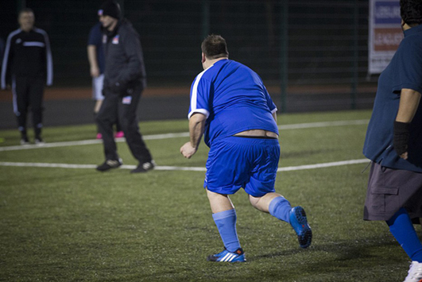

	<!--start-about-->
	<div class="about">
		<div class="container">
			<div class="about-top">
				<h3>Road to glory</h3>
				<div class="about-main">
					<div class="col-md-6 about-left">
						<h4>Mike's story</h4>
						<p>A few years back, Mike used to play football. He played in the Sunday league and also enjoyed playing indoor five-a-sides matches with the lads on a Saturday. After he stopped playing, the weight piled on, Mike could easily make a doner kebab and twelve bottles of thrappledouser vanish quicker than a chocolate doughnut at a weightwatcher's meeting.</p>
						<p>Out of the blue, Mike got a phone call asking him if he'd be interested in playing walking football. Mike accepted and has lost 9 stone since he started playing, he has also cut out the kebabs and beer. His quickest time for the three yard dash is now 10 seconds, a remarkable achievement when you consider he couldn't even run a bath 5 months ago.</p>
						<p>This could be you!</p>
					</div>
					<div class="col-md-6 about-left">
					
						
						<p class="aboutp">Mike last January</p>
					</div>
					<div class="clearfix"></div>
				</div>
			</div>
		</div>
	</div>
	<!--end-about-->
